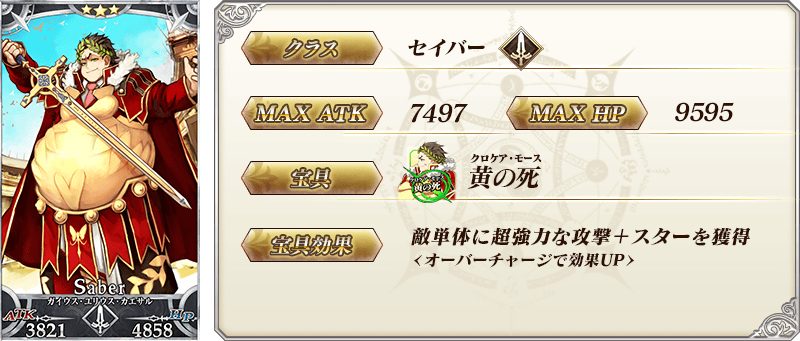
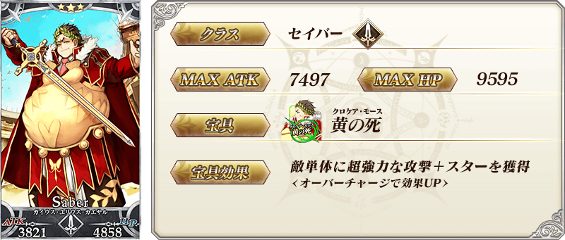
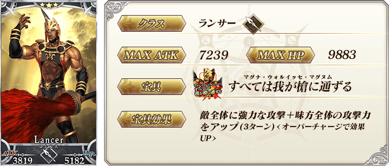
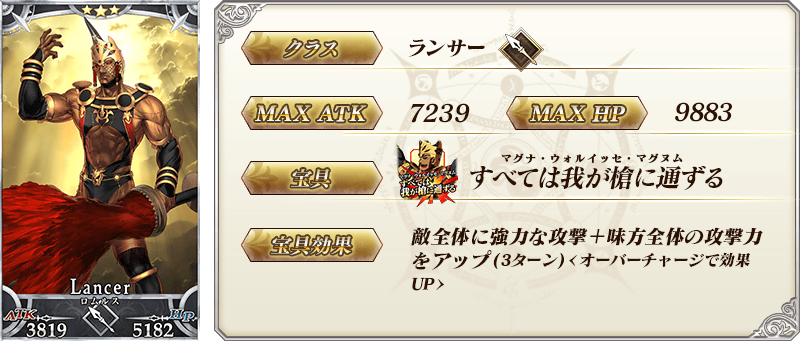
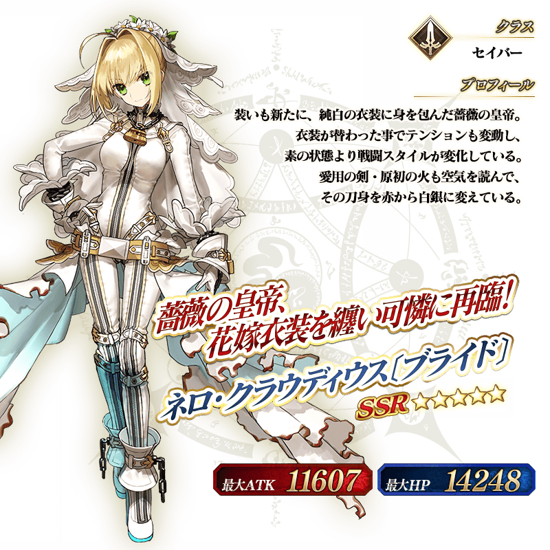

◆「1700萬DL記念Pick Up召喚」期間◆
期間:2019年6月26日(三) 17:00～7月10日(三) 11:59
舉辦期間限定「1700萬DL記念Pick Up召喚」！
為了記念1700萬DL突破「★5(SSR)尼祿・克勞狄烏斯〔Bride〕」以期間限定登場！
本次在上述再加上「★4(SR)尼祿・克勞狄烏斯(Saber)」「★3(R)蓋烏斯・尤利烏斯・凱撒」「★3(R)羅慕路斯」的4位Pick Up！
詳情請在聖晶石召喚畫面左下的召喚詳細確認。
◆有關從者的注意◆
※請注意「★5(SSR)偉大石像神」「★4(SR)拉克什米・芭伊」「★3(R)威廉・泰爾」會是抽出對象外。
※「★5(SSR)尼祿・克勞狄烏斯〔Bride〕」在Pick Up期間結束後不會追加到故事召喚。
※Pick Up期間中，「★4(SR)尼祿・克勞狄烏斯(Saber)」就算通過各章前也能入手。
※「★4(SR)尼祿・克勞狄烏斯(Saber)」「★3(R)蓋烏斯・尤利烏斯・凱撒」「★3(R)羅慕路斯」在Pick Up期間結束後仍會在故事召喚被抽出。
◆有關概念禮裝的注意◆
※請注意「★5(SSR)黄昏の王聖」「★4(SR)ラ・フォリア」「★3(R)デイ・アフター」會是抽出對象外。
※2019年6月29日(六) 12:00以後「★3(R)叡智の光」不會從故事召喚被抽出，追加至友情點數召喚。
還有，本Pick Up召喚中，2019年7月10日(三) 11:59前「★3(R)叡智の光」會被抽出。
Pick Up期間中，期間限定從者、Pick Up從者的出現機率提升！
10次召喚中確定1張★4(SR)以上和確定1位★3(R)以上的從者！
※確定★4(SR)以上包含從者和概念禮裝。
※本頁面皆為開發中圖片。會有與實際圖片相異的情況。

 ※上述「★4(SR)尼祿・克勞狄烏斯(Saber)」的卡面為靈基再臨第2階段。
※上述「★4(SR)尼祿・克勞狄烏斯(Saber)」的卡面為靈基再臨第2階段。
 
※上述「★3(R)蓋烏斯・尤利烏斯・凱撒」的卡面為靈基再臨第2階段。

※上述「★3(R)蓋烏斯・尤利烏斯・凱撒」的卡面為靈基再臨第2階段。
 
※上述「★3(R)羅慕路斯」的卡面為靈基再臨第2階段。

※上述「★3(R)羅慕路斯」的卡面為靈基再臨第2階段。

介紹「★5(SSR)尼祿・克勞狄烏斯〔Bride〕」「★4(SR)尼祿・克勞狄烏斯(Saber)」的寶具演出！
在「Fate/Grand Order」官方網站內的公告中，以影片公開寶具演出，敬請確認。
其他還有，進行1700萬DL突破記念特別連續登入獎勵和曜日關卡「種火集め」的AP消耗1/2等的「1700萬DL突破宣傳活動」舉辦中！
關於詳情，請自下述橫幅確認。
■「1700萬DL突破宣傳活動」詳細情報